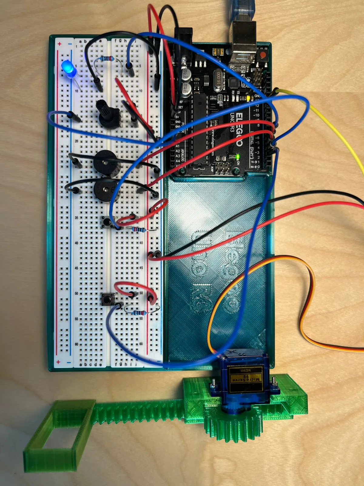
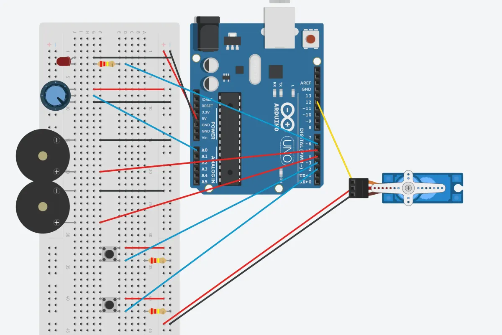
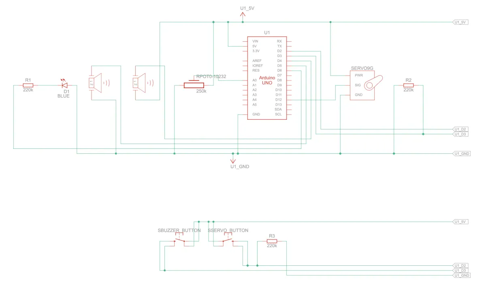

Top down view of breadboard and Arduino

Circuit view

Schematic drawing

#include <Button.h>
#include <Servo.h>
// Outputs
const int LED_FADE = 6;
const int BUZZER_SINGLE = 5;
const int BUZZER_MUSIC = 4;
const int DOOR = 12;
// Inputs
const int POTENTIOMETER = A0;
const int BUTTON_BUZZER = 3;
const int BUTTON_DOOR = 2;
// Configurable variables
int potVal = 0; // Set inital value of the potentiomater
int prevPotVal = 0; // Capture previous potentiometer value
int potThreshold = 5;
int delayTimeSound = 500; // Time between buzzer tones
int doorOpen = 180; // Door opens to 180 degrees
int delayTimeDoor = 5000;
int doorCloses = 0; // Door closes to 0 degrees
// Declare a button and a servo
Button buttSound (BUTTON_BUZZER);
Button buttDoor (BUTTON_DOOR);
Servo myservo;
void setup() {
// Tell Serial what this file will do
Serial.begin(9600);
Serial.println("Part 1: Potentiometer --> PWM LED");
Serial.println("Part 2: Button --> sound");
Serial.println("Part 3: Button --> servo door");
Serial.println();
// Setup pins
pinMode(LED_FADE, OUTPUT);
pinMode(BUTTON_BUZZER, INPUT);
pinMode(BUZZER_SINGLE, OUTPUT);
pinMode(BUZZER_MUSIC, OUTPUT);
myservo.attach(DOOR);
};
void loop() {
// Part 1 - Light
// Read the value from the analog pin; store its value in the variable "potVal"
potVal = analogRead(POTENTIOMETER);
// Output to LED the potentiometer's value; divides any value between 0-1023 into 0-255; print potentiometer value
analogWrite(LED_FADE, potVal/4);
if (abs(prevPotVal - potVal) >= potThreshold) {
Serial.print("Current: ");
Serial.println(potVal);
Serial.println("");
} else {
// Serial.print("No change: ");
// Serial.println(potVal);
// Serial.println("");
};
prevPotVal = potVal;
// Part 2 - Sound
// check the status of the button (what happened?)
int buttonStateSound = buttSound.checkButtonAction();
// When button is pressed, trigger active buzzer (play single tone)
if (buttonStateSound == Button::CLICKED) {
digitalWrite(BUZZER_SINGLE, HIGH);
Serial.println("Button pressed - Active buzzer");
}
// When button is pressed, trigger passive buzzer (play music)
else if (buttonStateSound == Button::HELD_CLICKED) {
tone(BUZZER_MUSIC, 440);
delay(delayTimeSound);
tone(BUZZER_MUSIC, 494);
delay(delayTimeSound);
tone(BUZZER_MUSIC, 523);
delay(delayTimeSound);
Serial.println("Button pressed - Passive buzzer");
}
else {
digitalWrite(BUZZER_SINGLE, LOW);
noTone(BUZZER_MUSIC);
};
// Part 3 - Door opener
// check the status of the button (what happened?)
int buttonStateDoor = buttDoor.checkButtonAction();
// When button is pressed, rotate servo 180 degrees
if (buttonStateDoor == Button::CLICKED) {
myservo.write(doorOpen);
Serial.println("Door opens");
delay(delayTimeDoor);
myservo.write(doorCloses);
}
else {};
};